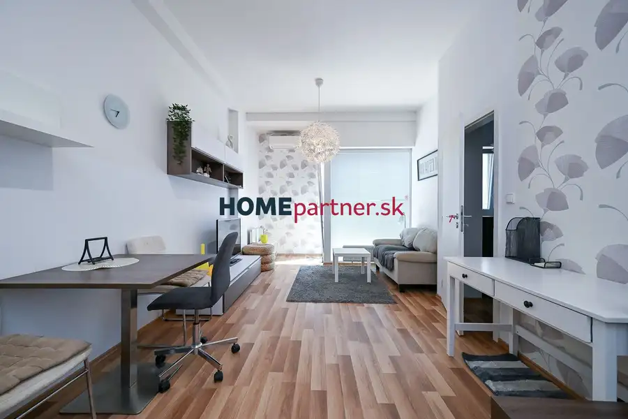
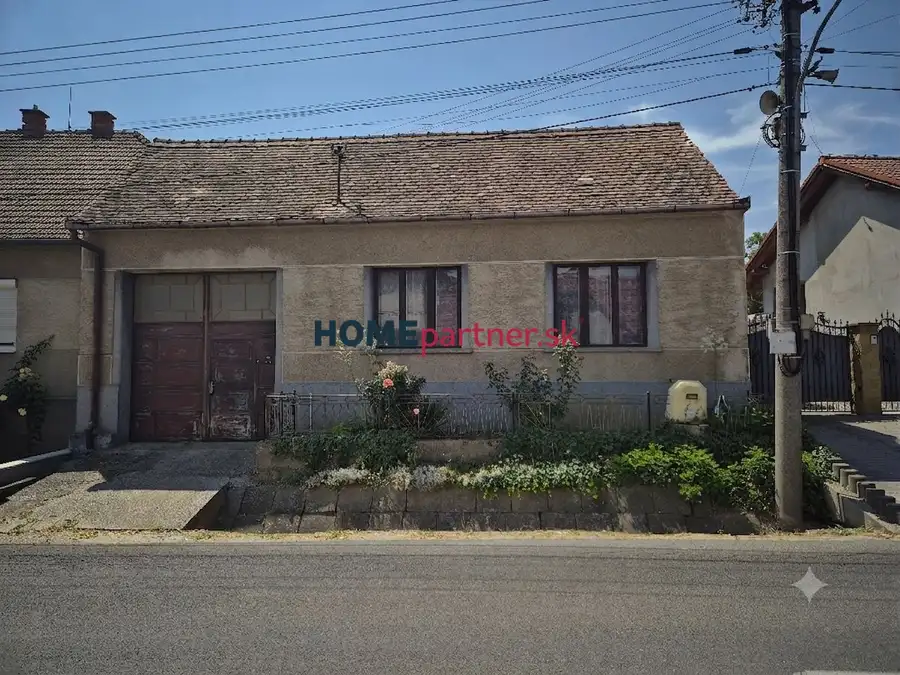
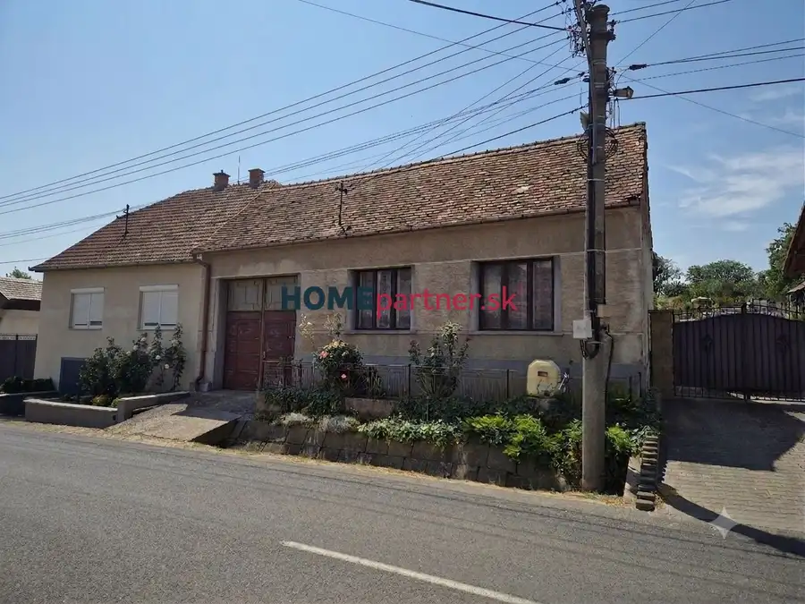

DLHÁ, stavebný pozemok 464 m2, oplotený & slnečný, uprostred obce s vynikajúcou expozíciou
Dlhá
- Plocha464 m²
O nehnuteľnosti
HOMEpartner.sk vám exkluzívne prináša na predaj stavebný pozemok uprostred obce Dlhá, okres Trnava. Všetko na možnosť trvalého bývania, v strede obce, len pársto metrov od zastávky autobusu a potravín. Hľadáte miesto, kde načerpáte novú energiu, utečiete pred mestským zhonom a zároveň budete mať na dosah ruky krásu Malých Karpát? Predstavte si, že sa každé ráno zobúdzate v obklopení prírody, a výhľad máte na neďaleké vŕšky Karpát. To všetko Vám ponúkne Dlhá, ktorá blízke kopce spája s vínom a zároveň blízkosťou krajského mesta, kam sa dostanete len za 15 minút. •Cykloturistika a turistika: Okolitá príroda a rovinatý až mierne kopcovitý terén okolo, sú ako stvorené na rodinné cyklovýlety, turistiku, alebo všetky iné formy oddychu. Trasy vás zavedú do malebných zákutí, kde zabudnete na akýkoľvek stres.ZÁKLADNÉ PARAMETREDlhá, okres TrnavaPozemok je oplotený, rovinatý Prístup vlastnou bránou z obecnej parcelyVeľkosť pozemku celkom 464 m2, samostatné parcelné čísloIS: elektrina, studňa, obecná voda, plynOrientácia – V+ J + Z (prevažuje Juh)NAŠE ODPORÚČANIEAk hľadáte pokoj a kontakt s prírodou, poloha Dlhej vás nadchne:•Hubárčenie a prechádzky: Tunajšie lesy sú vyhlásenou hubárskou lokalitou. Prechádzky vo voňavých borovicových a listnatých lesoch sú tou najlepšou formou oddychu•Vodný relax v okolí: Blízkosť rekreačných miest ako je hrad Červený Kameň a vodných nádrží, jedna z nich len pár km v obci Suchá nad Parnou, ponúka ideálne podmienky na rybolov alebo kultúrne vyžitie.•Pokoj vidieka, komfort mesta: Dlhá si zachováva čaro pokojného vidieckeho života, no okresné mesto Trnava je vzdialené len pár minút autom (15 min). Máte tak na dosah kompletnú občiansku vybavenosť, wellness, nákupné možnosti a kultúru.•Doprava do obce – vedie autom smerom do Trnavy, alebo smer Modra / Pezinok. Autom ste zhruba za 15 min obomi smermi v TT alebo Pezinku. Autobusom sa dostanete rovnako obomi smermi, do Trnavy prídete za 30 min. Spojenie na vlak máte k dispozícii rovnako z Trnavy alebo z Pezinka.CENA 57 500 € vrátane kompletného sprostredkovateľského servisuVážime si vašu dôveru, preto každú nehnuteľnosť, ktorú vám ponúkame, máme dôkladne preverenú a poskytneme vám o nej všetky dôležité informácie.Prevedieme vás celým procesom kúpy vrátane hypotekárneho poradenstva, právneho poradenstva a nadštandardných služieb v rámci prevodu nehnuteľnosti, ktoré u nás získavate automaticky a bezplatne.Ozvite sa nám0905 246 121kalisky@HOMEpartner.skHOMEpartner.skVáš domov, naše poslanie/// obrázok s domom je ilustračný pre inšpiráciu
Parametre
| Druh | Pozemok pre rodinné domy |
|---|---|
| Dátum zverejnenia | 1. 9. 2026 |
| Elektrina | Na pozemku - 230 V |
| Odpadové vody | Nedostupné |
| Plocha pozemku | 464 m² |
| Plyn | Pri pozemku |
| Pripravenosť k výstavbe | Schválené v územnom pláne |
| Terén pozemku | Rovinatý |
| Typ | Predaj |
| Voda | Na pozemku - Diaľkový vodovod |
Kde to je


Mohlo by Vás zaujímať

BytNové10 224 900 €RUŽINOV - VIETNAMSKÁ, 2-i byt, 47 m2 - bezbariérové bývanie Ružinov, Bratislava 2-izbový46.5 m²1. podlažie HOMEpartner.sk vám exkluzívne prináša na predaj 2-izbový byt v časti Ružinova pri AVIONE, s orientáciou do vlastnej terasy s posedením. Byt má všetky…
PozemokNové4 120 400 €ŠTEFANOV, stavebný pozemok 2881 m2, uprostred obce s vynikajúcou expozíciou, všetky siete na pozemku Štefanov 2883 m² HOMEpartner.sk vám exkluzívne prináša na predaj stavebný pozemok uprostred obce Štefanov, okres Senica. Všetko na možnosti trvalého bývania,…
DomNové5 120 400 €ŠTEFANOV, rodinný dom, všetky IS, veľká záhrada Štefanov 300 m² HOMEpartner.sk vám exkluzívne prináša na rodinný dom uprostred obce Štefanov, okres Senica. Všetko na možnosti trvalého bývania, rekreácie v možnej…